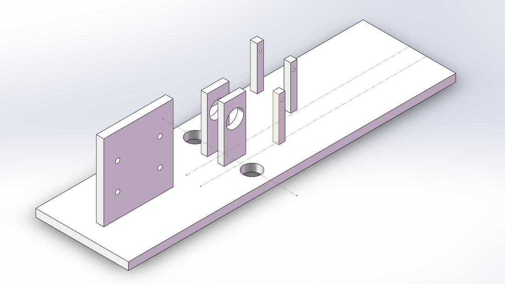

基于机器学习的智能垃圾分拣系统
作为负责人主导一套面向轻质包装废弃物的智能分拣系统：用 YOLOv5 视觉模型识别塑料瓶，配合电磁阀喷气的气压式穿孔传送带实现自动分拣，目标"单视觉传感器分拣六种材料"。
项目背景
现有垃圾分类系统多采用机械手，价格昂贵、效率低，且缺乏针对塑料垃圾的专门方案。本项目提出用电磁阀喷气控制塑料瓶筛选的新型方式，结合机器学习视觉识别，提升轻质可回收物的分拣效率与二次原料质量。
我的具体工作（作为负责人）
- 项目统筹：负责整体推进、跨学科分工与协作（视觉算法 + 机械 + 气动）。
- 数据集构建：负责塑料瓶图像数据集的拍摄与人工标注，覆盖不同光照、角度与瓶型，用于 YOLOv5 训练。
- 视觉硬件：设计并安装相机支架，搭建计算机视觉采集系统。
- 模型训练 & 机械系统：参与 YOLOv5 训练，以及气压式穿孔传送带的搭建与测试。
技术与工具
YOLOv5 目标检测、图像数据集标注、计算机视觉系统搭建、电磁阀 / 气压控制、传送带机械结构、机电一体化集成。
成果与亮点
- 提出并验证"电磁阀喷气分拣塑料瓶"的新型分拣方式（区别于昂贵的机械手方案）。
- 构建了从数据采集 → 标注 → 模型训练 → 实物传送带测试的完整原型链路。
- 设计目标：仅用一个视觉传感器即可分拣多达六种不同材料的轻质垃圾。
项目图片

点击图片可查看大图。更完整的系统方案图见项目申报书。
姚涵非 · 返回主页